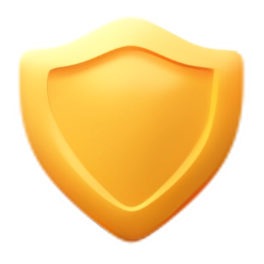

Dispozitivul dumneavoastră are rezoluția ecranului mai mică decât (375x667px) fapt ce nu permite afișarea conținutului sitului Cerebraspace. Recomandam accesarea paginii web pe calculatorul staționar, laptop, tablete, smarphone, frigidere, cuptor cu microunde care au ecran mai mare decât rezoluția sus menționată!
Echipa noastră
suntem dedicați furnizării celor mai bune servicii de hosting cu o vastă experiență în infrastructura IT și securitate cibernetică, alegeți să găzduiți jocurile într-un mediu sigur, performant și scalabil.
Primul hosting din Moldova la prețuri democrate și calitate indubitabilă care ne face lideri pentru proiectele mici nou lansate în industria jocurilor. Suntem în parteneriat cu Moldtelecom ce ne furnizează lățimea de bandă peste 256 GB/S. Traficul între client și server este procesat de proxy și firewall astfel încât efectele atacurilor DDOS sunt de minimă eficiență. Implementăm tehnologia CDN, deja avem sisteme hardware distribuite în diferite diferite regiuni ale țării capabile să proceseze un volum imens de pachete de date ce oferă nu doar protecție decentralizată ci și utilitate, promptitudine de viteză în relația client-server. Garantăm ferm protecție împotriva atacurilor cibernetice DDOS, DOS, stocare și păstrare data, actualizări de securitate, copii de rezervă regulate a datelor, confidențialitate și siguranță.
Contul personal are coș de achiziții unde puteți accesa și administra fiecare serviciu procurat. Numărul de servicii pentru găzduire web sau jocuri este nelimitat și pasibil de a se repeta pentru diferite proiecte. Admitem și încurajăm găzuirea mai multor pagini web și proiecte de joc în limitele bugetului financiar al mastercontului. Dacă la expirarea termenului de menținere online a proiectului nu rămân resurse financiare pentru achitare instantă, atunci beneficiați de un termen de grație de 7 zile pentru a suplini contul, în caz contrar deconectăm proiectele de la rețeaua globală și păstrăm fișierele proiectului intacte pe o perioadă de 30 zile.
Caracteristicile hardware sunt de ultimă generație fapt ce garantează sustenabilitate și performanță. În ceea ce privește RAM-ul, ne bazăm pe module DDR4-2666MHz însă pentru serviciile a căror preț depășesc 200 lei pe lună oferim spre uz module DDR5-4800MHz. Procesoarele noastre sunt rapide și corespund tehnologiilor cerute de piață, arhitectura AMD disponibilă în datacentrele cerebra sunt Zen3+ și Zen4 iar pentru Intel exclusiv Sapphire-Rapids-X. Configurația pentru serverul dedicat sau VPS variază de la 6 la 64 nuclee în funcție de necesitățile dumneavoastră. Puteți consulta și alege procesorul dorit chiar în momentul procurării.
Suntem deschiși colaborării active cu clienții interesați de configurații particularizate pentru serverul lor. Acceptăm sugestii și îmbunătățim gestionarea eficientă a resurselor pentru încărcările de trafic intense. Adesea comunitățile largi ale clienților noștri întâmpină astfel de probleme însă echipa noastră de suport face legătura rapidă și venim cu soluții precum: alocarea suplimentară de trafic, sporim dimensiunea RAM sau/și SSD, oferim acces la nuclee complementare ale procesorului sau chiar dublu CPU.
Confidențialitatea voastră, este reputația noastră. Suntem absolut responsabili de permisiunea dumneavoastră de a procesa datele cu caracter personal, de a păstra datele oferite prin upload, de a proteja proprietatea intelectuală și evita scurgeri de date. Defecțiunile tehnice provocate de atacuri cibernetice sunt înlăturate de echipa noastră în cel mai scurt termen posibil iar datele sunt criptate și nu pot fi accesate fără cheia deținută de client. Fenomenele naturate de asemnea pot fi factori ai dereglărilor funcționării cerebra, însă păstrarea decentralizată a datelor și backup-urile periodice ameliorează efectele negative.
Fii la curent cu ultimele noutăți Cerebraspace ce vizează promoții, reduceri, știri din lumea jocurilor, concursuri gaming la nivel național pentru a nu rata șansa de beneficia de avantaje și oferte extra pentru servicii de hosting. Nu uita cerebra informează și premiză pentru loialitate.
Compania noastră apreciază încrederea și susținerea comunității, procurând periodic serviciile noastre, puteți fi acel norocos care va primi pe mail oferta mult așteptată la cost preferențial. Nu ezita sa devii membru a comunitatii cerebra intrucat devii persoana care pune umarul la dezvoltarea si promovarea serviciilor digitale nationale!
Cerebraspace modernizează echipamentele de procesare și prelucrare a datelor pentru a servi intereselor comune de ridicare a scalabilității, stabilității funcționării serverelor găzduite, și păstrarea lor uptime. Avem SSD-uri de capacitatea 32 GB la 1 TB, procesoare de la compania INTEL seria Xeon și AMD seria Epyc.
Avem datacentre în toate municipiile Republicii Moldova dotate cu echipamente de ultimă generație. Pentru zona de nord punctul de conexiune este mun. Bălți, iar pentru zona centru și sud mun. Chișinău. Zona de acoperire permite clienților calitate superioară de upload și download fișiere utilzând protolul FTP, SFTP, HTTP, HTTPS. Pingul proiectelor lansate pe serverele noastre nu depășește 30ms.
Siguranța clienților este prioritatea noastră, în acest scop zilnic facem copii de rezervă a datelor care ulterior sunt codificate și păstrate în alte locații. La opțiunea dumneavoastră puteți beneficia de randament mai ridicat pentru procesele de backup, oricând și oriunde sunteți singurul titular al cheiei de acces la copiile de rezervă a propriilor proiecte.